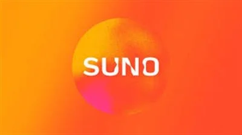
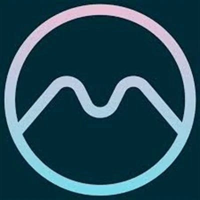
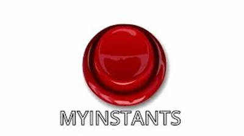

Best AI Audio & Voice Tools 2026 – Tested & Reviewed
AI audio tools have made professional voice and music production accessible to everyone. Whether you need realistic text-to-speech for videos, voice cloning technology, AI-generated music for your content, or a free online voiceover tool — these are the best AI audio tools in 2026. Stop paying for expensive studio recording when AI can do it in seconds. All tools reviewed by WebAlati.
Some links on this page are affiliate links. We may earn a commission at no extra cost to you. Disclosure policy →

ElevenLabs
FreemiumThe most advanced AI voice generation platform. Converts text to hyper-realistic speech in 35+ languages with voice cloning, AI dubbing, and speech-to-speech. Used by top creators worldwide.
Try ElevenLabs →Murf AI
FreemiumProfessional AI voice generation for videos, e-learning, and marketing. Includes voice cloning, AI dubbing, and integrations with Canva and PowerPoint. Create studio-quality voiceovers in minutes.
Try Murf AI →
Suno
FreemiumAI music generation tool that creates complete songs with vocals and instrumentation from a text prompt. Produce original, royalty-free music in seconds for any type of content.
Try Suno →TTS Maker
FreemiumFree text-to-speech tool with natural AI voices in multiple languages and styles. Ideal for educators and creators who need quick, high-quality audio without a subscription.
Try TTS Maker →
Muted
FreemiumInteractive music theory learning platform with chord generators, keyboard visualizers, and scale tools. Perfect for musicians and producers who want to understand harmony and composition.
Try Muted →
MyInstants
FreeSoundboard with thousands of meme audio clips and sound effects. One-click playback for streaming, TikTok videos, and content creation. A must-have for creators and streamers.
Try MyInstants →Frequently Asked Questions – AI Audio Tools
What is the best AI voice generator in 2026?
ElevenLabs is widely considered the best AI voice generator in 2026, offering the most realistic speech with voice cloning in 35+ languages. Murf AI is a strong second, especially for professional voiceover production.
Can AI generate full songs with vocals?
Yes — Suno is the leading AI music generator that creates complete songs including vocals and instrumentation from a simple text prompt. It's free to start and produces surprising quality results.
Is there a free text-to-speech AI tool?
TTS Maker offers a generous free tier with high-quality AI voices. MyInstants is also completely free for sound effects. ElevenLabs and Murf AI have free plans with limited monthly usage.
What is AI voice cloning and how does it work?
AI voice cloning creates a digital replica of a human voice from audio samples. ElevenLabs requires just 60 seconds of audio to create an Instant Voice Clone — you can then generate any text in that voice. Professional Voice Cloning (PVC) produces even higher quality from 30+ minutes of audio.
Which AI audio tool is best for content creators?
For content creators, ElevenLabs is the top choice for voiceover and narration. Suno is best for creating background music for videos. TTS Maker provides free text-to-speech for simple narration needs. ElevenLabs' free tier includes 10,000 characters per month — enough for testing before committing to a paid plan.
Some links on this page are affiliate links. We may earn a commission at no extra cost to you. Disclosure policy →